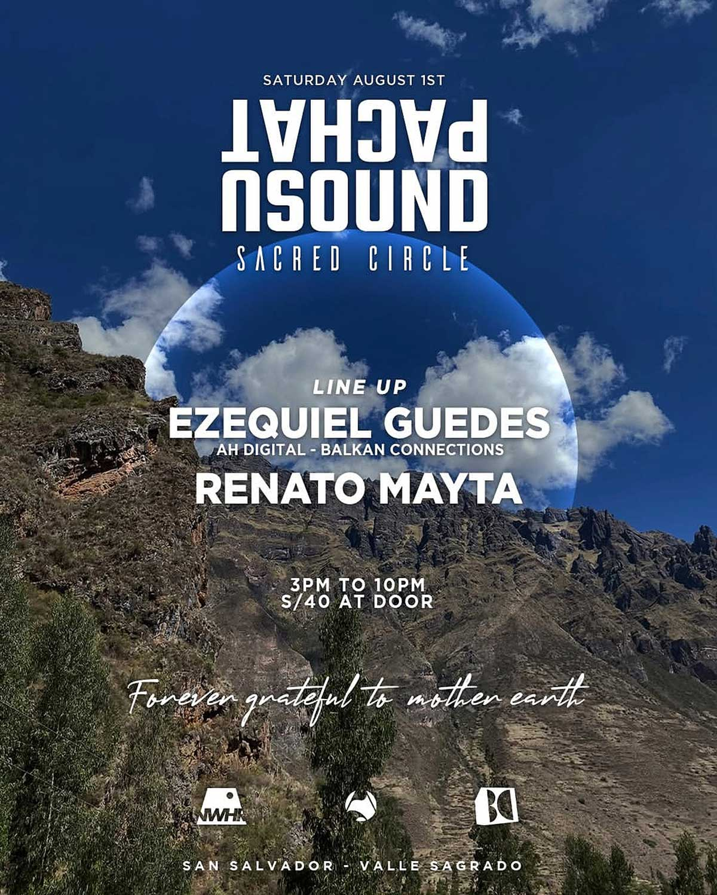

PACHATUSOUND
SACRED CIRCLE
fecha: 01/08/26 hora: 3pm - 10 pm
lugar: Pachatusound,
San Salvador, Valle Sagrado de los Incas


La música crea el círculo. La naturaleza marca el ritmo. Nosotros llevamos la energía.
Este 1 de agosto celebremos juntos a la Pachamama, honrando su abundancia y agradeciendo todo lo que nos brinda, en una experiencia única en el Valle Sagrado.
Music creates the circle. Nature sets the rhythm. We bring the energy. This August 1st, let us come together to celebrate Pachamama, honoring her abundance and expressing our gratitude for all that she provides, in a unique experience in the Sacred Valley.
FOVERER GRATEFUL TO MOTHER EARTH!!
LINE-UP:
Ezequiel Guedes
Renato Mayta